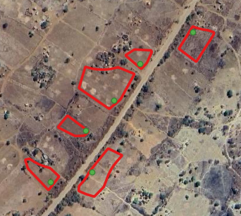
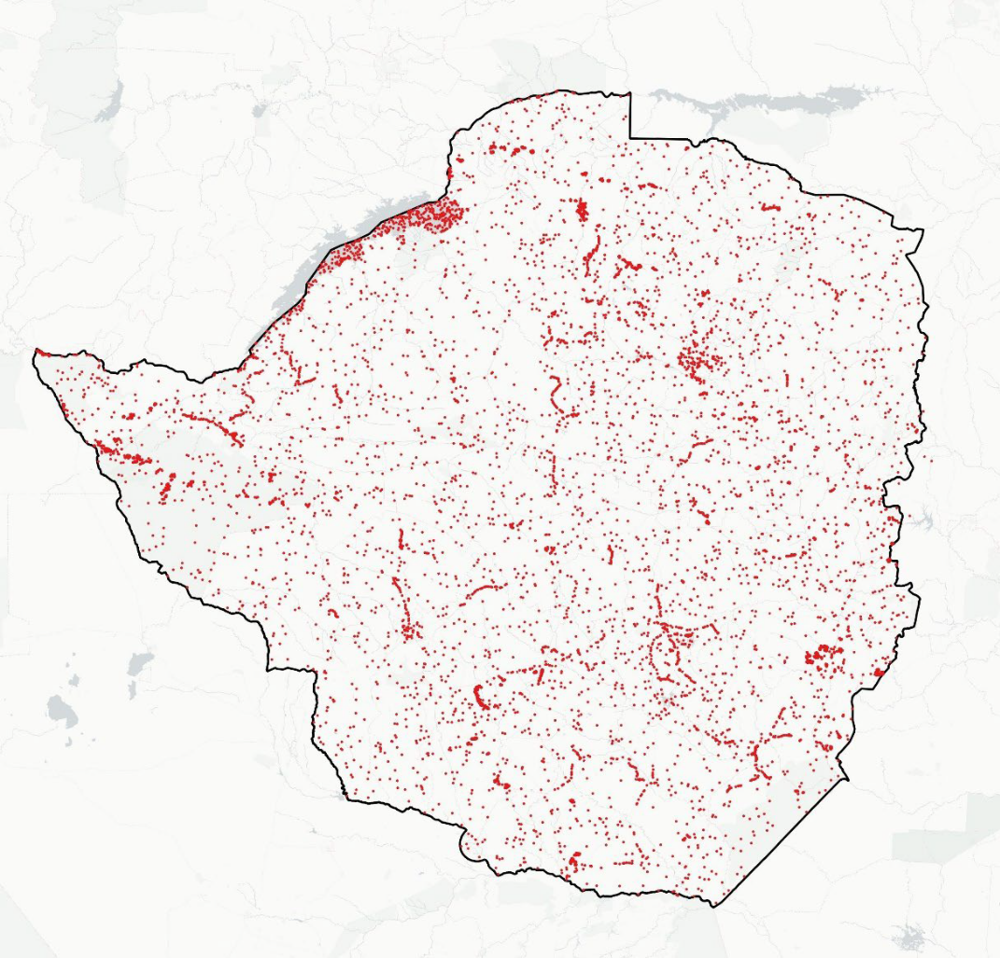
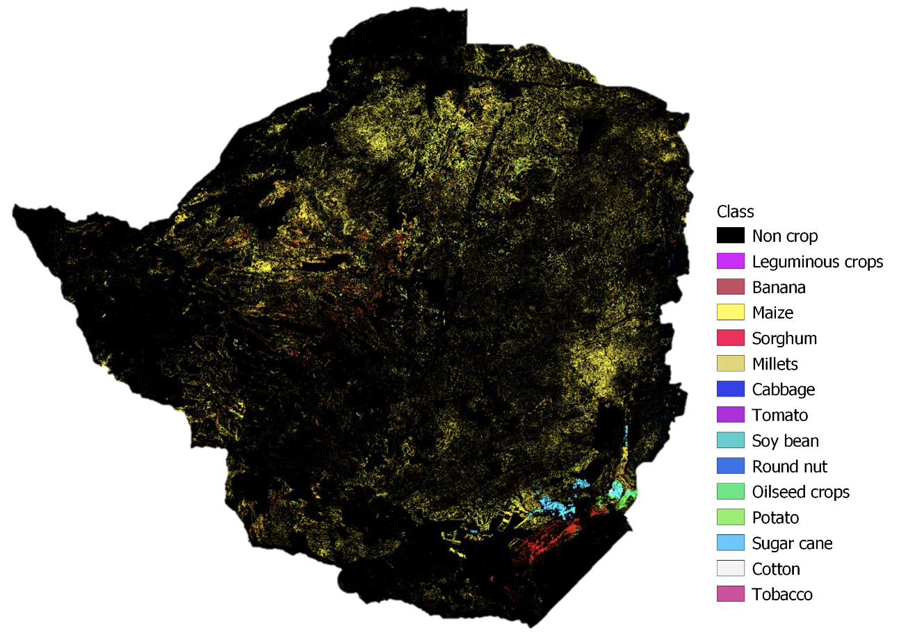
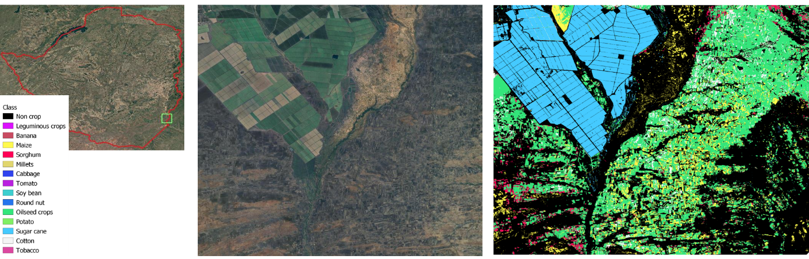
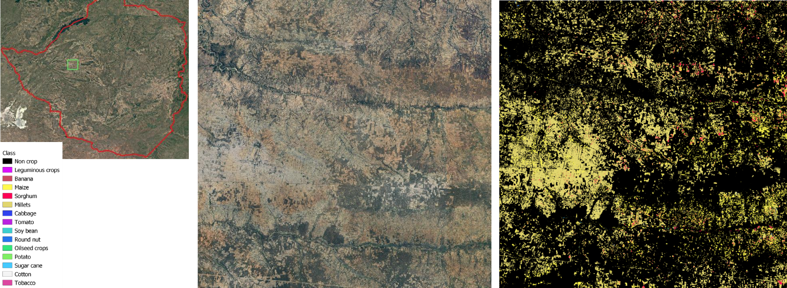
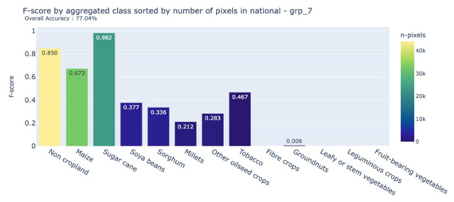
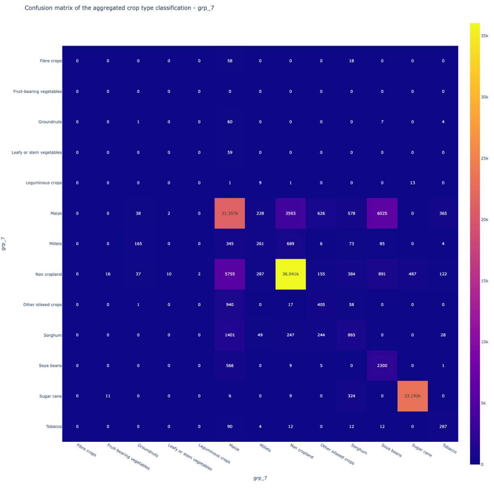

14 Crop classification in Zimbabwe
14.1 Outline
This chapter illustrates the operational use of Earth Observation (EO) for crop classification in Zimbabwe during the 2024 summer season, under the FAO–EOSTAT project. The exercise demonstrates how the Sen4Stat toolbox can support large-scale, national crop type mapping using Sentinel-2 data combined with in-situ observations.
The approach builds on extensive ground data collection campaigns, complemented with expert photo-interpretation and ancillary non-crop samples. The final classification map covers the entire country and includes major crops such as maize, sorghum, millets, soybean, oilseeds, and sugarcane.
14.2 Data and Methods
The classification exercise was conducted for the entire territory of Zimbabwe during the 2024 summer agricultural season. This period represents the country’s primary cropping cycle, with maize and other cereals dominating the central and northern regions, and irrigated sugarcane estates concentrated in the south-east. The diversity of production systems across agro-ecological zones made Zimbabwe an ideal test case for developing a national crop type map.
The analysis relied heavily on Sentinel-2 optical time series imagery at 10–20 m resolution. These data provided the spectral foundation for the classification, complemented by vegetation indices such as NDVI and water-related indices such as NDWI. Red-edge indices, which are particularly sensitive to crop growth stages, were also included to capture differences in crop phenology across the season.
To calibrate and validate the classification, the suitability of existing data collected by national stakeholders was first examined. Indeed, crop data is regularly collected by different departments inside the Ministry of Lands, Agriculture, Fisheries, Water, and Rural Development through scattered field campaign efforts. However, these local field campaigns did not allow to have a complete view of the crop situation at the national-level. The National Statistical Office, ZIMSTAT, is also implemented their own survey but without crop geolocalization. Therefore, a comprehensive set of ground observations was collected. The core of this dataset consisted of approximately 2,910 windshield survey points, collected across the country.
The quality assessment of the data collected concluded in their good quality; points being located inside parcels and in homogeneous areas. To strengthen spatial and spectral representativeness, homogeneous areas were delineated by photo-interpretation around these windshield points, thus moving from point to polygon and increase the number of pixels available for calibrating the classification algorithm (Figure 14.1). The photo-interpretation was based on a combination of very high-resolution (VHR) images and time series of Sentinel-2 images with a specific focus on classes’ spectral homogeneity and purity.
Non-crop classes were equally important for robust classification. For this purpose, about 500 samples were extracted from the ESA WorldCover 2020 map, representing stable categories such as forest, water, shrubland, bare soil, and built-up areas. An additional 700 targeted samples were collected in more challenging non-crop environments—such as savannas, dense vegetation, and water margins—where spectral signatures can easily overlap with cropland under drought or seasonal stress.
The integration of all these sources produced the final in-situ dataset used for classification and validation, which is presented in Figure 14.2. This dataset provided the statistical foundation for training the Random Forest model and for assessing the quality of the national crop type map.

14.3 Crop classification
The crop type classification was carried out using the Sen4Stat toolbox, which integrates statistical survey data with Earth Observation imagery through machine learning techniques. The Sen4Stat system is an evolution of the Sen2Agri system, whose performance has been demonstrated and validated in a variety of contexts [1].
For this case study, a Random Forest (RF) algorithm was chosen because of its robustness, its ability to handle high-dimensional datasets, and its proven performance in agricultural mapping tasks. The model was trained on a set of input features derived from Sentinel-2 multi-temporal imagery. These included not only the reflectance values from the spectral bands but also a series of vegetation and water indices, such as NDVI, NDWI, and brightness indices, which capture vegetation vigor and soil–moisture conditions. To further enhance class separability, the analysis incorporated red-edge indices (e.g. NDRE, REPI) that are particularly sensitive to crop growth stages. For each of these time-series indicators, statistical descriptors—including mean, median, minimum, maximum, and standard deviation—were computed across the growing season to summarize crop phenological dynamics in compact but informative variables.
One of the main challenges in the Zimbabwe dataset was the imbalance of classes, with dominant categories such as maize and non-cropland strongly outweighing minority crops like sorghum, millets, and oilseeds. To address this, the Synthetic Minority Oversampling Technique (SMOTE) was applied during training [2]. This procedure generates artificial samples of underrepresented classes based on their spectral and temporal properties, improving the ability of the RF classifier to learn distinctive signatures for minor crops.
The monitoring period was set between 15 November 2023 and 15 July 2024, which corresponds to the main summer agricultural season in Zimbabwe. This window was selected to ensure that the temporal profiles captured the entire cycle, from early planting and vegetative development through to maturity and harvest. By covering the full growing season and spanning the country’s diverse agro-ecological zones, the approach maximized the chances of distinguishing crop types based on their phenological behavior.
14.4 Results
The outcome of the classification process was the production of a national crop type map for the 2024 summer season, presented in Figure 14.3. The map provides a spatially explicit representation of Zimbabwe’s agricultural landscape, highlighting the dominance of particular crops and the regional diversity of production systems.
As expected, maize emerged as the most widespread crop, covering large portions of the central and northern provinces. In contrast, sugarcane, soybean, and oilseeds appeared more geographically concentrated, with clear clusters located in the south-eastern part of the country, particularly in areas with access to irrigation. Sorghum and millets were also detected across several regions, although their distribution was less continuous. These cereals posed challenges to the classification process because of their spectral and phenological similarity to maize, leading to frequent confusion between the classes.
Overall, the crop type map captures both the broad patterns of Zimbabwe’s cropping systems and the fine-scale structures of fields and parcels, offering a valuable resource for monitoring agricultural production at the national scale.



14.5 Accuracy assessment
The quality of the national crop classification was evaluated using an independent validation dataset, consisting of 25 percent of the windshield observations that had been withheld from model training. This ensured that the accuracy assessment reflected the classifier’s performance on unseen data, rather than simply reproducing the training set.
The results yielded an overall accuracy of 77.04 percent, demonstrating that the methodology was able to capture the main crop types with a satisfactory level of reliability for national-scale applications. More detailed insights into class-specific performance are illustrated in the F-score chart (Figure 14.6) and the confusion matrix (Figure 14.7).

Performance varied notably across crop types. Sugarcane achieved very high accuracy, benefiting from its distinctive spectral and spatial profile in localized irrigated estates. Maize, sorghum, and millets, on the other hand, proved more difficult to distinguish. Their overlapping phenological cycles and similar spectral behavior led to frequent confusion among these cereals. Errors were also observed in the separation between maize and soybean, and between maize and non-cropland, resulting in both commission and omission errors.
Despite these challenges, the classification showed a strong ability to discriminate cropland from non-cropland, an outcome reinforced by the inclusion of additional non-crop samples in the training dataset. This level of performance is significant in the Zimbabwean context, where accurate cropland extent information is critical for agricultural monitoring and food security planning.

14.6 Discussion
The Zimbabwe case study demonstrates the operational feasibility of generating national crop classification maps by combining open-access Earth Observation data with well-structured in-situ datasets. The 77% overall accuracy reflects a solid foundation for large-scale agricultural monitoring, while also highlighting areas for methodological improvement.
The analysis confirmed that certain crops, such as sugarcane, can be mapped with very high confidence, thanks to their unique spectral and spatial characteristics. By contrast, the classification of cereals like maize, sorghum, and millets proved more challenging. These crops share similar phenological patterns and spectral signatures, particularly during key stages of the growing season, leading to notable confusion in the model outputs.
Another important factor influencing classification performance was the imbalance in ground data across crop classes. Dominant crops such as maize were well represented in the training dataset, whereas minority crops had far fewer samples. This imbalance limited the model’s ability to capture the variability of minor crops, reducing their classification accuracy.
More samples should have also been targeted in the shrubland and grassland classes, which were not well discriminated against by cropland. This might be due to the specific context of the drought in 2024, which significantly reduced the contrast between natural vegetation and crops, but this type of confusion might be expected even without drought in smallholder agriculture systems. In the data collection, moving from points to polygons could also be a recommendation in the future to increase the number of calibration pixels.
These findings underscore the importance of designing balanced and representative in-situ datasets, especially when aiming for national-scale applications. Targeted sampling in difficult contexts—such as savannas, grasslands, or drought-affected areas—can substantially improve the robustness of crop classification models. In this sense, the Zimbabwe case not only provides a working prototype of national crop mapping but also offers lessons for the refinement of sampling strategies and methodological approaches in future applications.
14.7 Conclusion
The EOSTAT Zimbabwe case study delivered a validated, national-scale crop type classification for the 2024 summer season, achieving an overall accuracy of 77%. This result is particularly significant given the seven crop and non-crop classes included in the analysis, ranging from dominant crops like maize to minor ones such as soybean, oilseeds, and millets. As documented in the literature, classification accuracy generally decreases as the number of crop classes increases, due to class imbalance and spectral similarity among crops with overlapping phenological cycles [4]. In fact, accuracies above 70%–75% are rarely attained in national-scale classifications with more than five crop classes [1]. Against this benchmark, the Zimbabwe outcome can be considered robust: sugarcane was mapped with high reliability, while confusion among cereals pointed to known challenges that could be addressed through more balanced ground data collection and advanced classification methods. Beyond the technical findings, the exercise highlights the operational value of the Sen4Stat toolbox, which proved capable of delivering consistent, policy-relevant outputs. In doing so, the study established not only a validated national crop type map but also a prototype framework for a national crop monitoring system in Zimbabwe, offering a replicable model for other countries modernizing their agricultural statistics.
References
[1]
P. Defourny et al., “Near real-time agriculture monitoring at national scale at parcel resolution: Performance assessment of the Sen2-Agri automated system in various cropping systems around the world,” Remote Sensing of Environment, vol. 221, pp. 551–568, 2019, doi: 10.1016/j.rse.2018.11.007.
[2]
N. V. Chawla, K. W. Bowyer, L. O. Hall, and W. P. Kegelmeyer, “SMOTE: Synthetic minority over-sampling technique,” Journal of Artificial Intelligence Research, vol. 16, no. 1, pp. 321–357, 2002.
[3]
G. M. Foody, “Status of land cover classification accuracy assessment,” Remote Sensing of Environment, vol. 80, no. 1, pp. 185–201, Apr. 2002, doi: 10.1016/s0034-4257(01)00295-4.
[4]
A. Orynbaikyzy, U. Gessner, and C. Conrad, “Crop type classification using a combination of optical and radar remote sensing data: A review,” International Journal of Remote Sensing, vol. 40, no. 3, pp. 1–43, 2019, doi: 10.1080/01431161.2019.1569791.